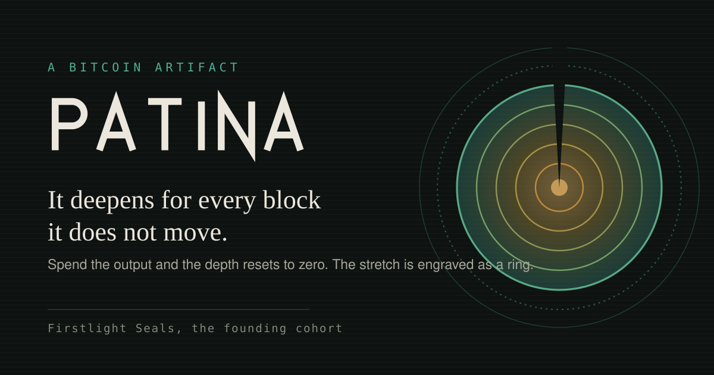

Press and brand
Assets and words you can reuse
Everything here is free to use when writing about PATINA. The only rule that really matters is not to imply we endorsed something we did not.
Descriptions
One paragraph
PATINA is a Bitcoin protocol that marks one unspent output as the carrier of an artifact. The artifact's depth is simply the number of blocks that output has stayed unspent, so it deepens on its own and resets to zero the moment the output is spent. That reset is inherited from Bitcoin's own model rather than enforced by anyone, because spending an output destroys it. Each completed stretch is engraved permanently as a ring. The genesis asset, the Firstlight Seals, is minted for network fees only inside a single window of 4032 blocks, with at least 100 000 sats of the minter's own bitcoin sealed inside as an endowment that stays theirs.
Longer
PATINA is a Bitcoin protocol for artifacts that measure one thing: how long an output has been left alone. An artifact points at exactly one unspent output, its carrier. Depth is the current block height minus the height at which that carrier was created, so it is a subtraction any Bitcoin node can perform, with no index and no trusted party. Depth is never stored, only computed when asked. Eight named tiers mark ranges of depth, from Raw at zero through Sheen, Cast, Verdigris, Umber, Bronze and Oxide to Elder at 210 000 blocks. Spending the carrier ends the stretch. Nothing enforces that reset, because nothing has to: a spent output no longer exists, and a destroyed output has no age. What remains is a ring, a permanent record of where the stretch started and ended, how deep it went and what value it carried. Rings accumulate and cannot be removed. The artifact then continues on a successor output at depth zero, or becomes a relic if the spend left nothing eligible behind. The genesis asset is the Firstlight Seals. They can be claimed only inside a single window of 4032 blocks, with no price, no cap, no reserve and no allocation to the people who built the protocol. Claiming uses an aged commit and reveal: the commit output must be at least 144 blocks old before the reveal can spend it, and only the committer can spend it, which makes a claim impossible to snipe and removes any advantage to acting at a particular second. A founding carrier must hold at least 100 000 sats of the minter's own bitcoin. That bitcoin is not paid to anyone. It stays theirs, spendable at any time, and spending it resets the depth. PATINA is explicit about what it does not do. Depth proves that an outpoint has not moved, and with a signed attestation over the artifact id and a recent block hash it also shows the key is alive. It does not prove that the same person held it throughout, because keys can be sold off chain with nothing recorded. Founding membership can be farmed by anyone willing to park real bitcoin, so concentration figures are published live while the window is open rather than after it closes. Buying an artifact moves it, which resets its depth. PATINA is built by Bitcoin Universe, and neither Bitcoin Universe nor anyone else can pause the protocol, freeze an artifact or reverse a spend.
Names and spelling
- The protocol is PATINA in running text, in capitals.
- The genesis asset is Firstlight Seals, one word for Firstlight.
- The tiers are Raw, Sheen, Cast, Verdigris, Umber, Bronze, Oxide, Elder.
- Depth is measured in blocks, never in days. Days are always an estimate.
- There is no version number in the name. Please do not add one.
Assets
Every file is hand authored SVG. They scale to any size and stay sharp in print.
{kind=link}
{kind=link}
{kind=link}
{kind=link}

{kind=link}
{kind=link}
{kind=link}
If you are publishing a link preview
These cards are SVG, because this site ships no build step and no binary assets. Most social platforms only render raster previews, so export the card you need to PNG at 1200 by 630 before you publish. Nothing about the artwork changes when you do.
Colour
| Role | Dark | Light |
|---|---|---|
| Ground | #0e1211 | #f2efe7 |
| Ink | #ece7dd | #1c211f |
| Bronze | #c98f3c | #7a5312 |
| Verdigris | #4fb094 | #1e6b57 |
| Tier 0, Raw | #8f8578 | #6f675c |
| Tier 3, Verdigris | #a89147 | #7b672a |
| Tier 7, Elder | #3f9f8c | #1f6f5f |
Typography is a system serif for headings, the system interface font for body text and a system monospace for anything numeric. No web fonts are loaded anywhere on this site, so there is no font file to license or ship.
Usage rules
Please do
- Use the assets as they are, at any size, in any medium.
- Recolour the wordmark to a single flat colour when a layout needs it.
- Leave clear space around the mark equal to the radius of its innermost ring.
- Link to this site when you quote it. Nothing here is behind a paywall.
- Say what you actually think. Critical coverage does not need our permission.
Please do not
- Stretch, skew, rotate or add effects to the wordmark or the mark.
- Redraw the mark with a different ring count. The strata carry meaning.
- Use the assets to imply that Bitcoin Universe endorses, audits or partners with your project.
- Put the mark on a product that sells, custodies or lends artifacts.
- Add a version number to the name anywhere.
- Combine the assets with price predictions, return figures or invented statistics.
Facts worth checking before you publish
- There is no mint price, no supply cap, no team allocation and no reserve.
- Depth resets on any movement, including a sale.
- The founding cohort can be farmed by anyone with bitcoin to park.
- All eight tier thresholds are on the protocol page, in blocks.
- Any number you have seen about live activity should come from an indexer, not from us. Here is how to query one.
Contact
Brand and press questions go to legal@bitcoinuniverse.io. Technical questions are better as an issue on the protocol repository, where the answer is public and stays findable.